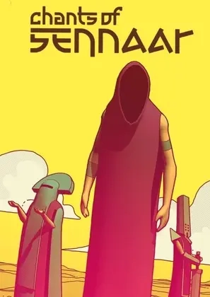

| Quick Facts | |
|---|---|
 | |
| Season: | X |
| Contract: | Arcana Special |
| Contractor: | Bpendragon |
| Completed: | 100 % |
| Format: | Game |
| Developer: | Rundisc |
| Date: | 2023 |
| Genre: | Language, Puzzle |
| Link: | Official Site |
Hello everyone, welcome to a new review about Chants of Sennaar, an indie game I had in sight for quite a time now. I already knew that the game was about discovering a language through glyphs, but didn't know there was a full story and more languages behind all this. In short, it was a very nice surprise, I loved going through all the virtual cultures and languages.
The goal of the game is to progress in a brand new world, a tower, by learning the local language and solving what is blocking us from continuing. This learning is helped by a notebook that periodically checks if some graphemes are known, and translates the learnt sentences.
Overall the difficulty is more to understand what to do where rather than learning the language, since the notebook translates whole sentences, and hovering a glyph shows its meaning. I would have loved to get a "hardcore" mode where no help is given when hovering a glyph, compelling the player to truly recognize it, and not solely rely on the hints.
The plot of the game seems pretty simple but evolves slowly toward a very philosophical thought on society and communication. I liked the way every level has its own culture and approach to their language, as well as mentality regarding the Traveler. It makes the NPC very lively, and thus every new category of population is a whole new adventure.
What impressed me is the quality of the languages, each one has a different construction, a different vocabulary that matches their culture etc. The amount of work to make these realistic is huge, each grapheme is well-thought, and the Bard writing is so beautiful with its continuous top line!
The final language to learn is completely different, it works on logical construction and precedent knowledge, which is a very interesting gameplay shift.
What really helped to make this game a good one is the artistic style. The emphasized lines and soft colors, along with the importance given to color signature, play a big role in making atmospheres for each zone, that shifts the mood and feeling of each population. They also have a different way to talk, different music, different reactions... everything is set up to mimic real civilizations.
I also liked the way the game found an end and an explanation to the story. Restarting the exploration of the tower through a broken environment is very interesting and makes remember everything that happened, good idea !
I already knew I would love this game, as I'm fond of languages, but I was impressed by the quality of the work around. Insane game by insane French devs, I'm really glad to have played this, and would have loved to be able to discover this game for way more than 8 hours. Thank you a lot Bpendragon. 10/10